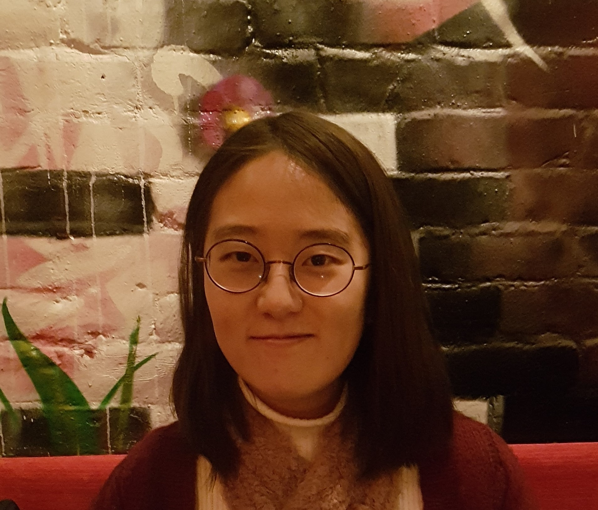

<p>
I am a third year PhD student at <a href="https://linguistics.mit.edu" target="_blank">the department of linguistics at MIT</a>.
My research interests include phenomena at the syntax-pragmatics interface.
More specifically, I am interested in how discourse-related elements are represented in the syntactic structure of sentences.
I am currently working on where in the sentence Korean addressee honorification is represented, and how it is syntactically licensed. 
Before coming to MIT, I studied for a B.A. and M.A. in linguistics at <a href="https://linguist.snu.ac.kr/en" target="_blank">the department of linguistics at Seoul National University</a>.
</p>